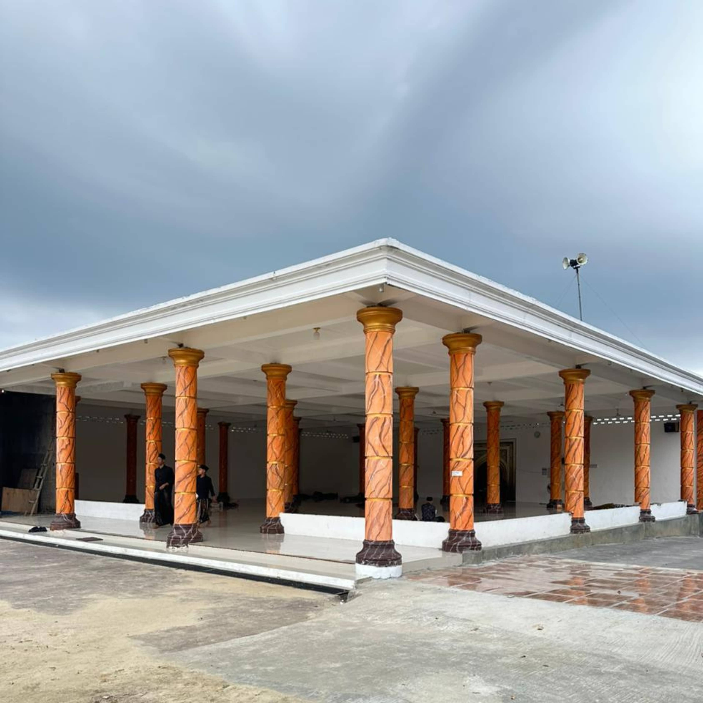

PPRQ Al-Falah
Program Pendidikan hafalan Al-Qur'an dengan metode tasmi' dan murajaah.

Mencetak para santri sebagai kader ahlus sunnah wal jama'ah an Nahdliyah yang teguh dalam prinsip ilmiyah-amaliyah dan amaliyah-ilmiyah serta berakhlaqul karimah.
Menjadikan Al Falah sebagai rujukan pengembangan keilmuan keislaman dan da'wah multi kultural.
.jpeg)
Pendidikan formal jenjang pertama yang memadukan kurikulum nasional dengan pembinaan nilai-nilai kepesantrenan untuk mencetak generasi berkarakter dan berdaya saing.
Pendidikan formal jenjang menengah kejuruan yang memadukan kurikulum nasional dengan pembinaan nilai-nilai kepesantrenan untuk mencetak generasi berkarakter dan berdaya saing.

Akses pendidikan tinggi negeri yang fleksibel dan berkualitas bagi para santri maupun masyarakat umum untuk meraih gelar sarjana.





Prosedur pendaftaran praktis, cepat, dan mudah dilakukan secara mandiri dari rumah melalui formulir digital resmi kami.
Daftar OnlineUnduh formulir pendaftaran fisik untuk diisi secara manual, lalu serahkan langsung ke sekretariat Pondok Pesantren.
Daftar OfflineDapatkan kejelasan rincian biaya awal masuk santri baru, biaya bulanan (syahriah), serta rincian kebutuhan seragam dan kitab untuk kelancaran proses belajar putra-putri Anda.
Lihat Rincian Biaya AdministrasiPondok Pesantren Al-Falah, Teluk Dalem Ilir, Kec. Rumbia, Kab. Lampung Tengah
Buka di Google Maps